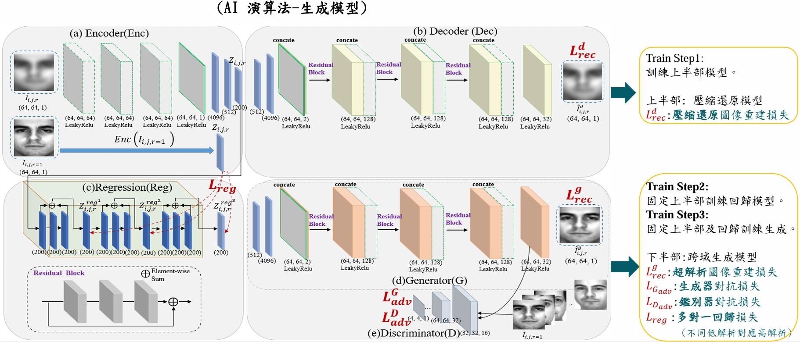
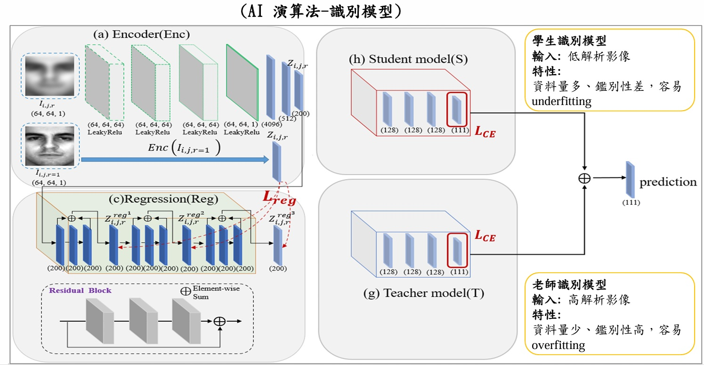
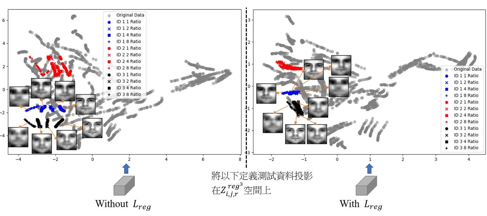
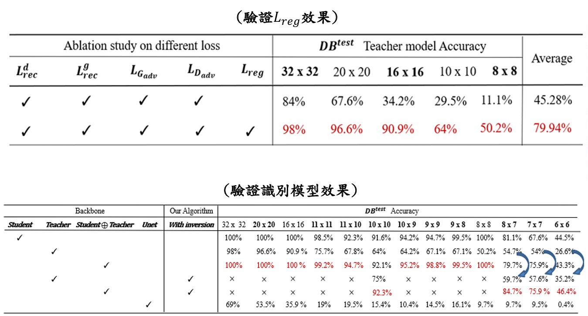

人臉超解析度合成系統
Face Super-Resolution with GAN-based model
Train-Stage1: 訓練上半部分Autoencoder，進行壓縮還原任務。
Train-Stage2: 訓練回歸模型，不同低解析學習對應高解析影像在空間上的分布。
Train-Stage3: GAN-based 模型訓練，輸入低解析影像學習生成對應仿真高解析影像。
Train-Stage4: 全部模型權重調整成可訓練，Loss皆可調整模型，End-to-End 訓練。
透過不同階段的Pre-Train可以確保模型有辦法訓練得起還，並且透過一對一壓縮還原模型幫助
多對一還原模型，再加上回歸的效果可以模擬真實情況，不同的低解析影像都可以還原至對應高解析影像。

人臉身分辨識整合系統
Identity Recognition
老師模型輸入影像特性: 輸入高解析影像，單一影像、多樣性小、鑑別性高，容易Overfitting.
學生模型輸入影像特性: 輸入低解析影像，多樣化影像，鑑別性低，容易Underfitting.
將兩者模型的特徵進行特徵融合，效果會較各別單一模型識別效果更佳，也驗證合成高解析影像識別結果叫低解析影像高。

"回歸損失函數"如何幫助合成以及識別
Regression Loss => Distribution
此圖為取模型中間特徵投影在2維的PCA空間上。
(左圖:沒有加上回歸損失函數) => 觀察到相同身分、不同解析度在空間中沒有聚類性。
(右圖:有加上回歸損失函數) => 觀察到相同身分、不同解析度在空間中有聚類性。
1. 有回歸損失時，低解析特徵會靠近高解析特徵，這可以讓合成品質更接近高解析影像。
2. 有回歸損失時，相同身分、不同解析度在空間上有聚類性，這可以幫助識別效果更好。

合成結果視覺化
Synthesis Result
(a): 高解析真實影像
(b): 不同低解析影像
(e): 最終合成結果

準確率結果
Accuracy Result
(上圖: Ablation Study) => 可以明顯看到有加入回歸損失在不同解析度的準確率都較高。
(下圖: 驗證識別模型算法的貢獻) => 可以觀察到老師模型跟學生模型進行特徵融合勝過於任何單一模型的效果。
可以額外看到在推論時，我另外在特徵空間設計特別的損失函數進行動態搜尋編碼，這可以讓推論的結果更好。
總結:
1. 合成模型在加入回歸時，可以讓不同解析度都還原的更好，模擬真實世界可能有不同解析度的情況。
2. 識別模型在觀察不同影像特性後，開發老師以及學生模型，讓識別效果變得更佳。
3. 推論時，引入Gan Inversion 技術，在特徵空間中動態尋找對應特徵，讓推論結果更好。